胶片色彩
富士
业务100
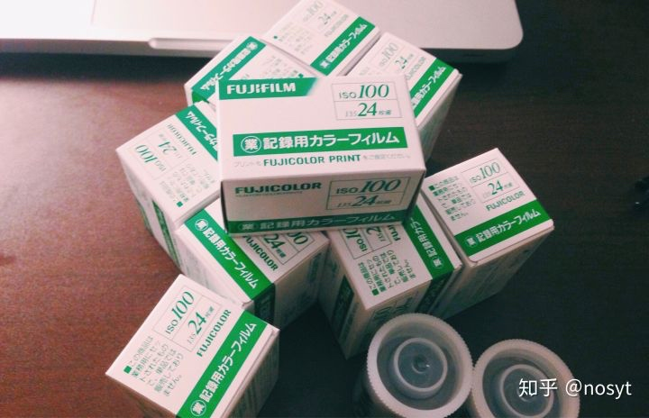
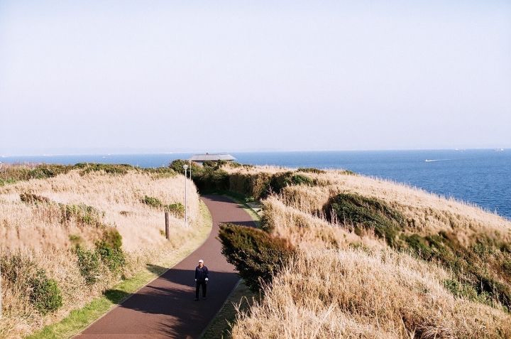
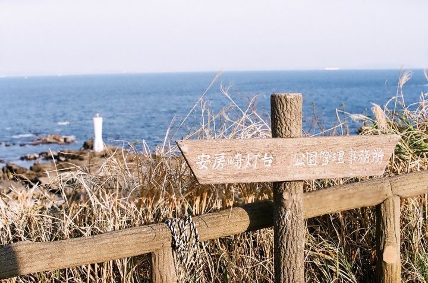
FUJIColor 100
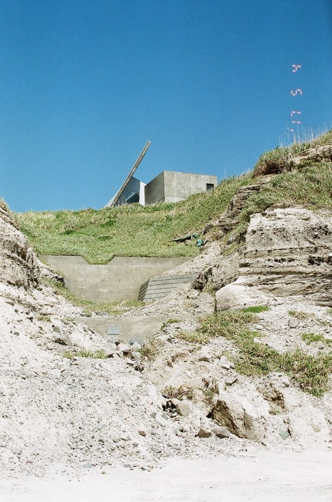
fujicolor C200
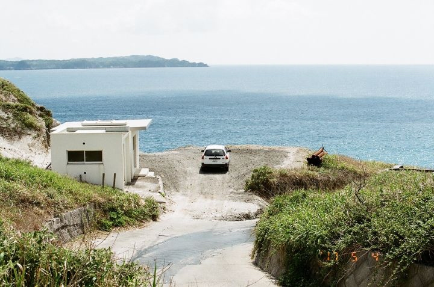
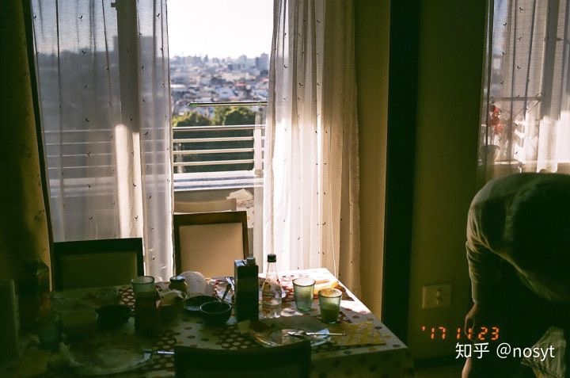
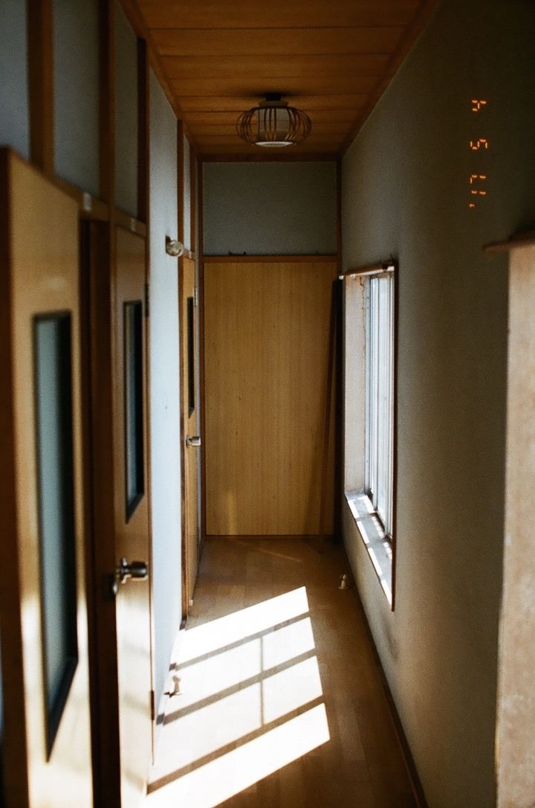
Pro400H
最细腻的负片
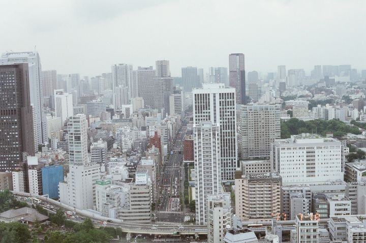
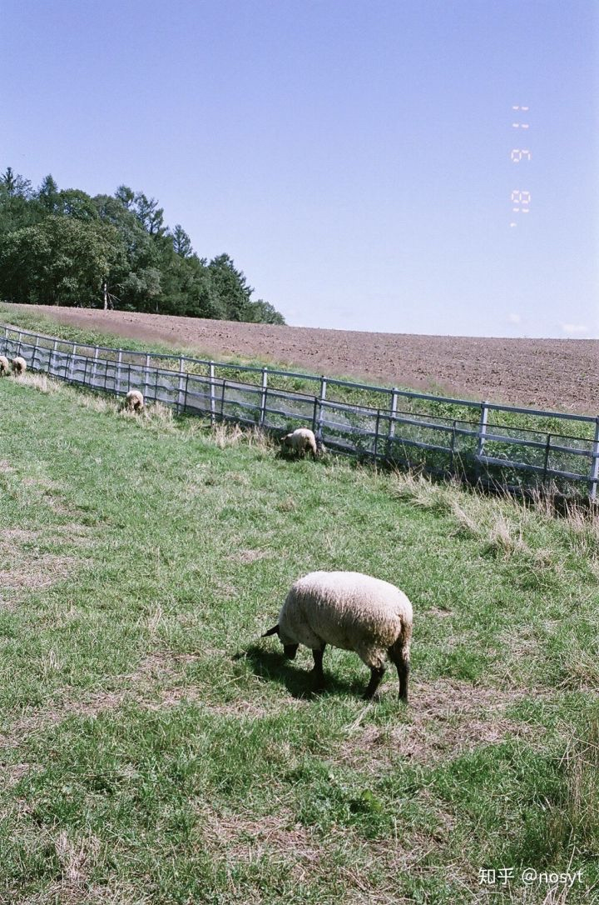
premium400
natura 1600 细腻
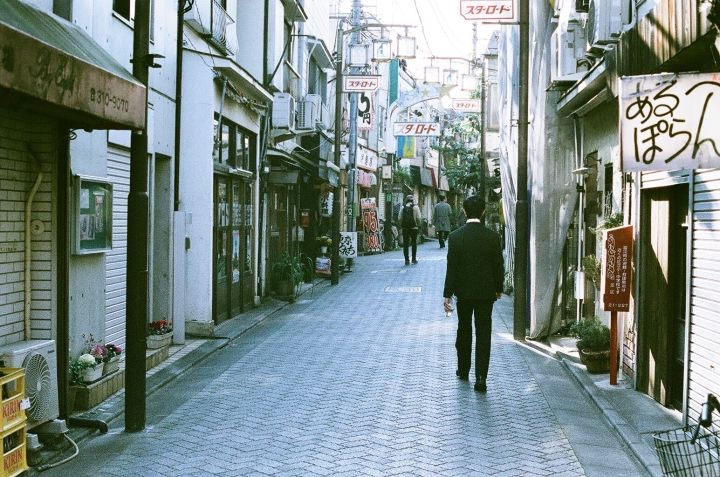
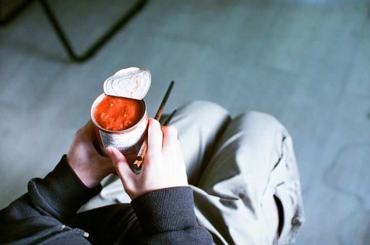
x-tra400
柯达
PROTRA 400 炮塔
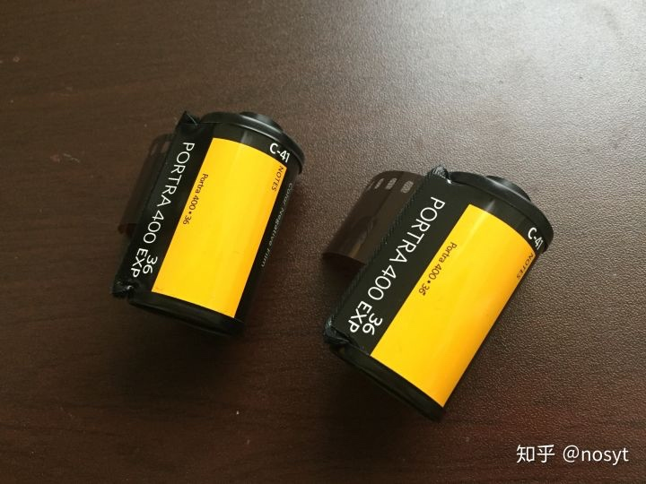Flickr搜索 PROTRA 400
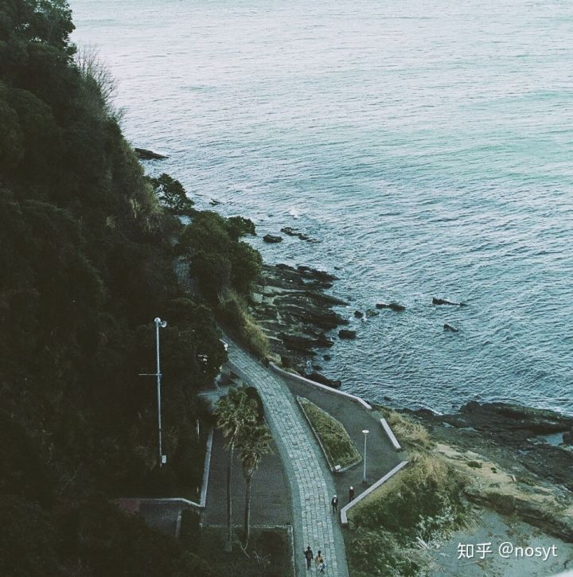
总结一下。让我推荐的话新手可以试一试natura1600。1600的感度可以适应稍微暗点的环境，这卷的颗粒很细，颜色也很正。新人一开始玩胶片很大一部分都是奔着所谓的胶片味来的，我觉得natura1600的胶片味还是比较明显的。 然后可以试一下pro400h，拍拍人像可以用，颗粒细过natura1600，对青绿色的表现很好。 c200和业务卷我觉得可以放在后面，不少人都是从这两卷入门的，但我觉得业务卷那种淡色调很难把人拉入坑，适合拿来长期拍摄。 x-tra400我觉得阴雨天拍的应该很好看，这卷跟富士其它卷有点不同，其它卷很多都是绿色调，这卷却是蓝色调。不知道是不是只有我拍的是这样.... 我目前最喜欢的是cinestill800Tag：，“胶片味”最重的一卷，可能不会拍照的人看到也能猜到那是胶片拍的。这卷口味很重，玩久了可能会腻，半年来一卷拍拍夜景还是不错的。 至于colour100和preium400，这两个我只拍过一卷，都是在海边拍的。所以特征还不好判断。 一次性相机的话可以买来玩个新鲜，不适合长期玩。毕竟那塑料镜头成像素质实在太差，也没有测光和对焦，就像个玩具，不过方便倒是真的。
https://www.zhihu.com/question/24811233/answer/157247569
其他链接
一篇香港的胶片介绍
从淘宝上比较容易能买到的 135 彩色负片胶卷，我数了一下大概12种吧，主要是柯达和富士。